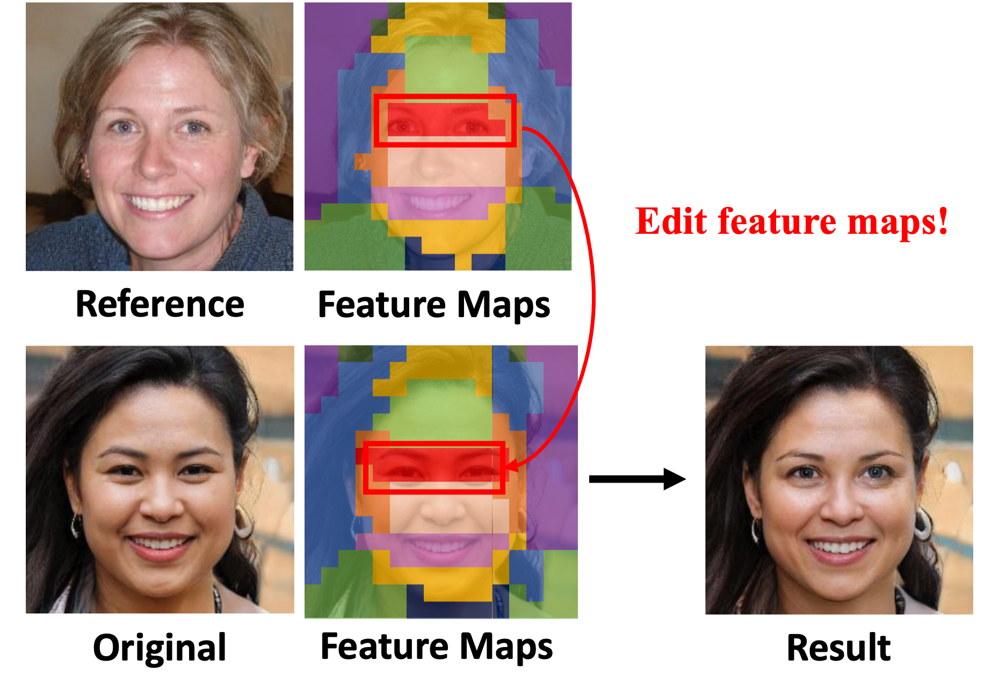
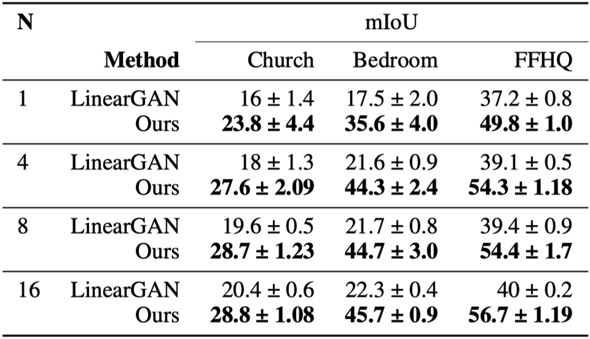
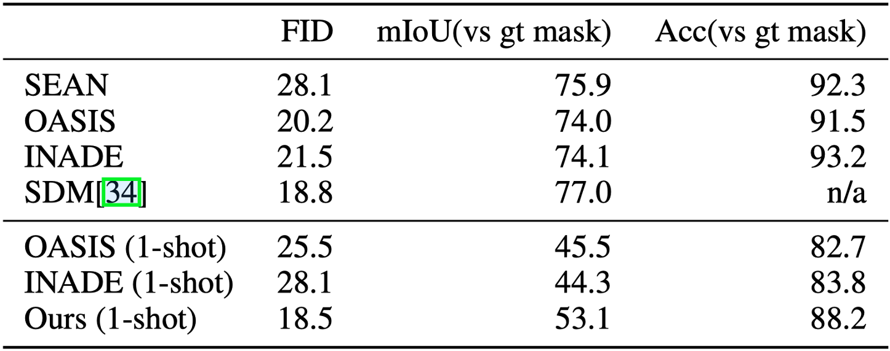

The intermediate feature maps of the generator contain the semantics of the resulting image. Therefore, editing these feature maps will result in a corresponding change to the resulting image.
Inference
Comparison with Competitors
Qualitative Comparison with a Few-shot Method

Qualitative Comparison with Supervised Methods

Quantitative Results
Quantitative Comparision with a Few-Shot Method
Quantitative Comparison with Supervised Methods

Applications
Application 1 - Free-Form Image Manipulation
We demonstrate the flexibility of our proposed method in enabling free-form image manipulation. Our approach highlights its capability of handling masks that differ significantly from typical training distributions, such as large pointy ears and corn head.

Application 2 - Image Generation with Multiple Conditions
To show the versatility of our method, we present images generated under various conditions of user sketch, HED and depth map.
AFHQ Cat Results with Sketch Conditions

LSUN Church Results with Sketch Conditions
FFHQ Results with HED Conditions
LSUN Bedroom Results with Depth Conditions
Application 3 - Exemplar-Guided Image Generation
Beyond the specified conditions, our model produces an output image that has a similar structure to a provided sample. The process can be done by obtaining the proxy mask of the inverted provided sample.